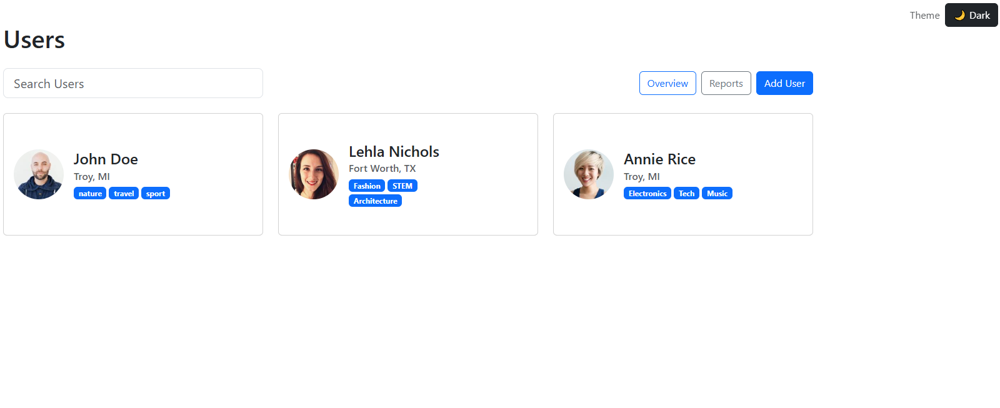

Quiz 4 : Bootstrap Framework (Formative)
- Type
- Quiz
- Date
- 23 Sep 2026
- Role
- Individual Developer
Description: พัฒนาเว็บไซต์โดยใช้ Bootstrap เพื่อจัดรูปแบบและวางโครงสร้างหน้าเว็บให้มีความสวยงามและรองรับการแสดงผลบนอุปกรณ์หลายขนาด
Skills: HTML, Bootstrap 5, CSS
Reflection: ผมได้เรียนรู้วิธีใช้ Bootstrap เพื่อช่วยลดการเขียน CSS ด้วยตนเอง และเข้าใจการทำ Responsive Web Design ผ่านระบบ Grid และ Breakpoints เช่น col-12 และ col-md-6 การทำความเข้าใจว่า Bootstrap แต่ละ class ทำงานอย่างไร โดยเฉพาะเรื่อง Grid, Breakpoints และ Flexbox ตอนแรกยังสับสนระหว่าง class ต่าง ๆ แต่หลังจากทดลองปรับขนาดหน้าจอและทดสอบหลายรูปแบบ ทำให้เข้าใจการทำงานมากขึ้น
